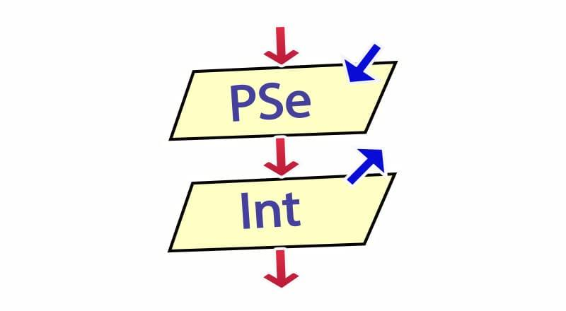
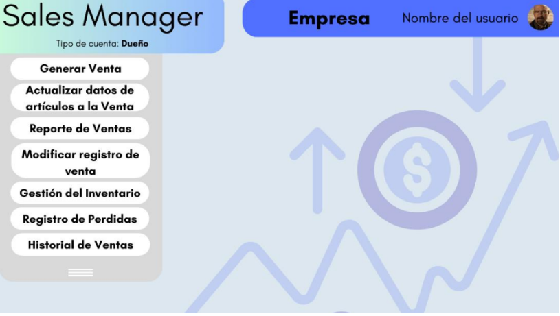
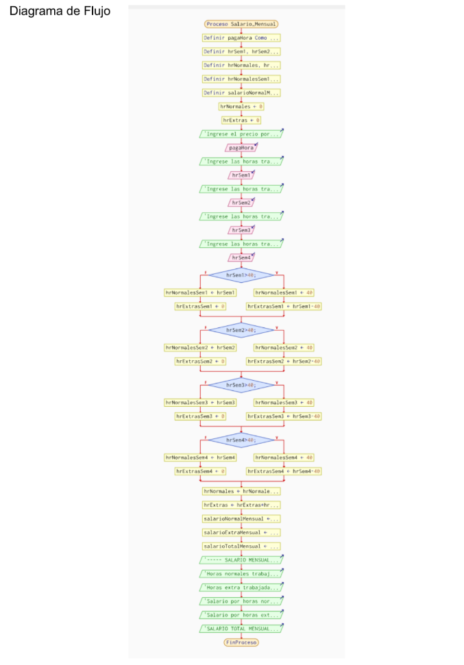

Recursos Visuales


Submódulos
// SUB 3.1
Sistemas de Información
Se estudian los fundamentos de los sistemas de información: tipos, componentes, ciclo de vida y metodologías de análisis y diseño. El alumno aprende a modelar procesos mediante diagramas de flujo, DFD y bases de datos relacionales básicas.

// SUB 3.2
Programación
Se desarrollan trabajos en c++ para aprender lógica de programación, estructuras de control, funciones y manejo de datos. El alumno resuelve problemas computacionales mediante algoritmos eficientes y código limpio.

← Volver al inicio